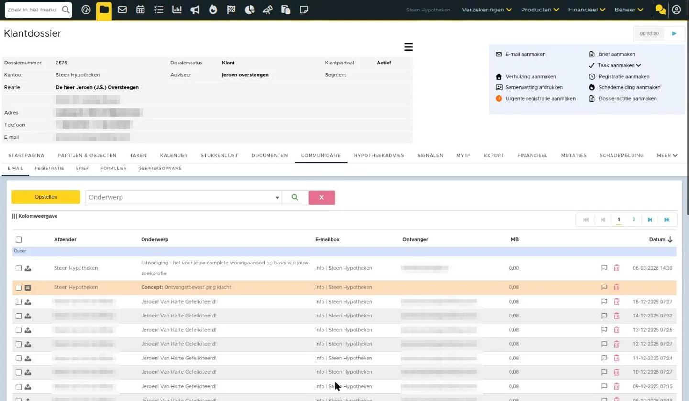

E-mail(bijlagen) koppelen aan dossier
Om alle communicatie onder een klantdossier duidelijk vast te leggen, is het essentieel dat je e-mails koppelt aan het juiste dossier. Het koppelen van één of meerdere e-mails aan een dossier kan op twee manieren: handmatig en automatisch.
Tip: het is ook mogelijk om een e-mail te koppelen aan een specifieke polis.
Eén e-mail handmatig koppelen
Wanneer je een e-mail ontvangt die nog niet gekoppeld is aan een dossier, kan je deze handmatig koppelen aan een dossier. Dit doet je door bovenaan een e-mailbericht op het koppelteken te klikken.
In de pop-up krijg je nu dossiersuggesties, de optie om een dossier te zoeken én zie je jouw 10 laatst bezochte dossiers. Klik op het koppel icoon aan de rechterkant van de regel om de e-mail te koppelen aan het dossier.
Wanneer je op de omschrijving van het dossier klikt, krijg je de keuze of je de e-mail direct aan een schademelding of product wilt koppelen.
Meerdere e-mails koppelen aan een dossier
Wanneer je meerdere e-mails aan een dossier wilt koppelen, maak je een selectie van de gewenste e-mails. Er verschijnt vervolgens een koppelteken bovenaan de e-mailbox.
Als je hier op klikt, verschijnt er een pop-up waarin je het gewenste dossier selecteert. Wanneer je dit hebt gedaan, zijn de e-mails gekoppeld aan het dossier en kun je ze verwijderen uit je persoonlijk e-mailbox. De e-mails blijven dan opgeslagen in het dossier.
Het is niet mogelijk om e-mail(s) aan meerdere dossiers te koppelen. Ze kunnen aan één dossier gekoppeld worden.
E-mails automatisch koppelen aan een dossier
De automatische koppeling kan op drie manieren.
1. Op basis van het dossiernummer in de onderwerpregel (herkenbaar aan #D in het onderwerp)
Dit doe je bij het verzenden van een nieuwe e-mail. Hiervoor voeg je, bijvoorbeeld bij dossiernummer 9876, #D9876 toe aan de onderwerpregel. Dit kan je op elk gewenste plek van de onderwerpregel plaatsen, bijvoorbeeld aan het einde.
Wil je dat de dossiertag standaard aan een onderwerp regel wordt toegevoegd? Dan kan je hiervoor de aanvraag mailen naar support-eblinqx@blinqx.tech.
2. Op basis van het e-mailadres van de klant
Je kunt ook het e-mailadres van een klant koppelen aan het gewenste dossier. Dit doe je door het e-mailadres toe te voegen aan het bijbehorende dossier. Dit gaat als volgt:
- Ga naar het dossier waaraan je de e-mail wilt koppelen
- Klik onder “Partijen en Objecten” op de naam van de klant of voeg een nieuwe klant toe
- Voeg het e-mailadres dat je wilt koppelen toe aan de bijbehorende persoon of organisatie
Vanaf nu wordt iedere e-mail die dit e-mailadres als afzender bevat, automatisch gekoppeld aan het gekoppelde dossier.
Let op: dit e-mailadres mag slechts in één dossier voorkomen. Wanneer het in meer dan één dossier voorkomt, zal eBlinqx NIET automatisch koppelen.
3. E-mail versturen vanuit het dossier
Als je een e-mail direct verstuurt vanuit het dossier dan wordt deze ook automatisch gekoppeld aan het dossier.
E-mail wel of niet automatisch koppelen
Het kan zo zijn dat je niet wilt dat e-mails automatisch gekoppeld worden aan een dossier. Per mailbox kan je aangeven of de e-mails automatisch gekoppeld worden. Dit doe je via de E-mailmanager - betreffende mailbox - tabblad Algemeen - Email automatisch koppelen aan een dossier. Hier kan je het automatisch koppelen activeren (keuze Ja) of uitzetten (keuze Nee).
Mochten er meerdere deelnemers in dezelfde omgeving werken dan kan je aangeven per mailbox welke deelnemers je hieraan wilt koppelen. De e-mail zal dan alleen automatisch gekoppeld worden aan dossiers die vallen onder het kantoor van de gekoppelde deelnemer.
E-mail aan ander dossier koppelen of loskoppelen
Het kan zijn dat de e-mail gekoppeld is aan het verkeerde dossier. Dan kan je via het 'herkoppelicoon' de e-mail losmaken van het verkeerde dossier en direct koppelen aan het juiste dossier.
De e-mail kan ook ontkoppeld worden van het dossier, zonder dat deze aan een ander dossier gekoppeld wordt. Deze komt dan terug in de algemene mailbox van waaruit deze e-mail is verzonden of ontvangen.
Hiervoor ga je in de e-mail naar het zwartje pijltje en kies je voor 'Ontkoppel van dossier'.
Let op: bij het herkoppelen en ontkoppelen van een email, worden eventueel reeds gekoppelde bijlagen ook ontkoppeld. Deze staan dan niet meer onder het tabblad Documenten in het dossier. Wanneer je de e-mail hebt herkoppeld aan het dossier, dan moet je (indien gewenst) zelf ook de bijlagen uit de e-mail te koppelen aan het dossier.
E-mails koppelen aan product of schademelding
Om de communicatie over bijvoorbeeld een hypotheek of schademelding overzichtelijk vast te leggen, kun je e-mails koppelen aan een product of offerte. Om de e-mail te koppelen aan een product moet deze eest aan een dossier gekoppeld zijn. Hiervoor klik je op het dossier met paperclipicoon. Vervolgens kan je de e-mail ook direct aan het product koppelen door middel van het koppelicoon achter het betreffende product.
Indien de e-mail al aan een dossier is gekoppeld kan je de e-mail aan het product koppelen door middel van het kubus-icoon.
Het is ook mogelijk om meerdere e-mails tegelijk aan een product te koppelen. In de e-mailmodule selecteer je door middel van de checkbox welke e-mails je wilt koppelen aan het product. Vervolgens klik je op het koppelicoon.
Dan klik je op de naam van het dossier. Je krijgt dan de producten onder het geselecteerde dossier te zien, waar je via het koppelicoon het juiste product kunt kiezen.
Daarnaast is het mogelijk om de e-mail te koppelen aan een polis of schademelding.
E-mailbijlagen koppelen aan dossier en/of de stukkenlijst
Een bijlage uit een e-mail is eenvoudig te koppelen aan een dossier én indien gewenst gelijk aan de stukkenlijst. Hieronder lees je hoe je dit doet.
Bijlage aan een stuk koppelen
Als de bijlage een stuk uit de stukkenlijst van een klant is, volg de volgende stappen.
- Indien de e-mail nog niet aan een klantdossier is gekoppeld, doe je dit eerst.
- Open vervolgens de e-mail in het klantdossier.
- Klik in de e-mail achter de bijlage op het koppelicoon.
Of klik op het paperclipicoon boven in de e-mail om alle bijlagen te koppelen.Afbeelding volgt - Het volgende scherm verschijnt. Hier geef je per document aan welk stuk het document gekoppeld moet worden. Hier is te zien welke stukken nog aangeleverd dienen te worden:
Het document is nu onder het stuk in de stukkenlijst te zien.
Bijlage in een dossier opslaan
Indien het document niet aan een stuk uit de stukkenlijst gekoppeld dient te worden, sla je deze als document op in het juiste klantdossier.
Volg hiervoor de zelfde bovenstaande stappen, maar kies bij het koppelen van de bijlage voor 'Categorie' (i.p.v. 'stuk').
Kies vervolgens bij "Soort document" een van de te kiezen soort documenten.
Vul het scherm verder in zoals gewenst.
Het document is nu opgeslagen in het tabblad 'Documenten' in het dossier.
Bijlage toevoegen vanuit taak
Vanuit de e-mail kan je ook direct een taak aanmaken. Als je in deze taak de bijlages aanvinkt en je slaat de taak op dan komen de bijlagen automatisch onder het tabblad Documenten te staan. Hier lees je er meer over.
Bijlagen splitsen of samenvoegen
In dit artikel lees je meer over het splitsen of samenvoegen van PDF-bijlagen in de e-mail.
E-mail te groot
Het kan gebeuren dat een e-mail te groot is om volledig gedownload of weergegeven te worden. De e-mail wordt dan wel getoond, maar hierin staat de melding 'Deze e-mail is te groot en kan niet volledig worden gedownload en weergegeven. Vraag de afzender om de belangrijke informatie opnieuw te sturen en rekening te houden met de maximale grootte van 25 MB'. Let op: bij de 25 MB wordt niet alleen gekeken naar de grootte van de bijlage, maar ook de inhoud en opbouw van de e-mail wordt hierin meegenomen. Het kan zijn dat de bijlagen als lege bijlagen in deze e-mail staan. Op deze manier kan de e-mail dan wel worden binnengehaald en je weet dat er een bijlage is meegestuurd.
E-mail wordt aan het verkeerde dossier gekoppeld
Bij het automatisch koppelen van een e-mail kijkt eBlinqx Connect in deze volgorde:
- Is de e-mail een reactie op een e-mail die vanuit eBlinqx Connect is verstuurd? Dan wordt gekoppeld op basis van technische gegevens die eBlinqx Connect onzichtbaar aan de e-mail meegeeft.
- Staat er een koppelcode in het onderwerp, zoals #D voor een dossier? Dan wordt op basis daarvan gekoppeld.
- Lukt dat niet, dan wordt gekeken naar het e-mailadres van de ontvanger (bij een uitgaande e-mail) of van de afzender (bij een binnenkomende e-mail). Komt dit e-mailadres in precies één dossier voor, dan wordt de e-mail aan dat dossier gekoppeld.
Wordt een e-mail op basis van het e-mailadres aan een dossier gekoppeld terwijl dat niet de bedoeling is? Dan kun je dit op twee manieren oplossen:
- Verwijder het betreffende e-mailadres uit het dossier.
- Of voeg het e-mailadres ook toe aan een ander dossier. Het e-mailadres komt dan niet meer in één dossier voor, waardoor e-mails niet meer automatisch aan het dossier worden gekoppeld.
Zo ziet het er nu uit in eBlinqx Connect
